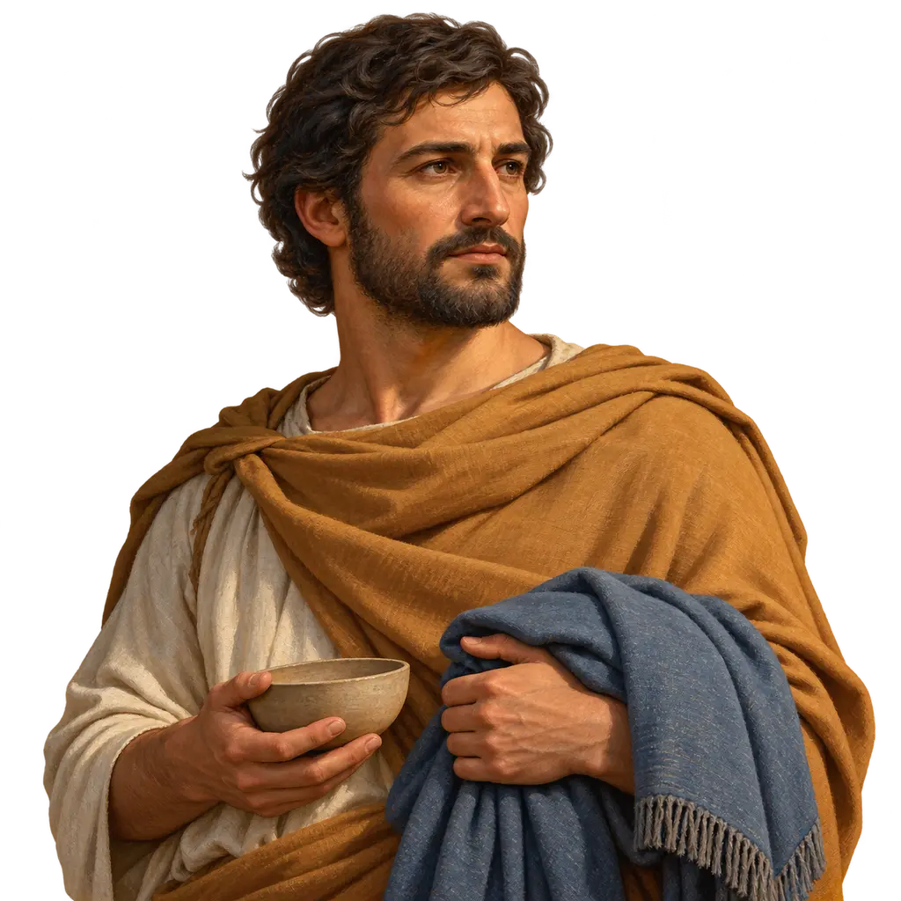
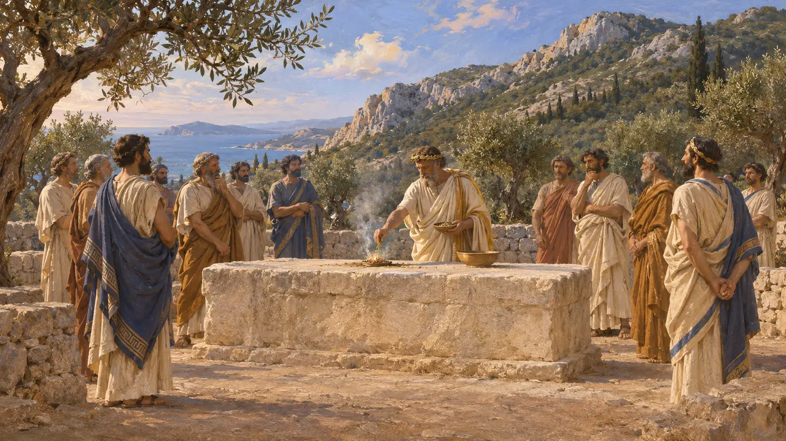
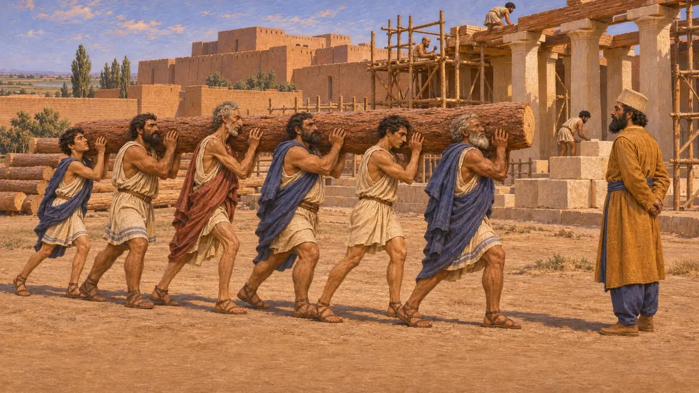
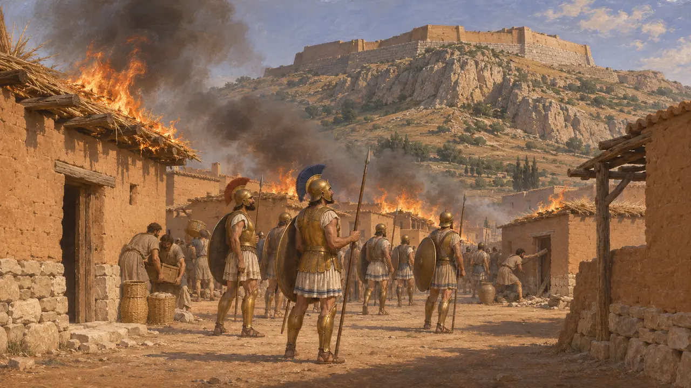
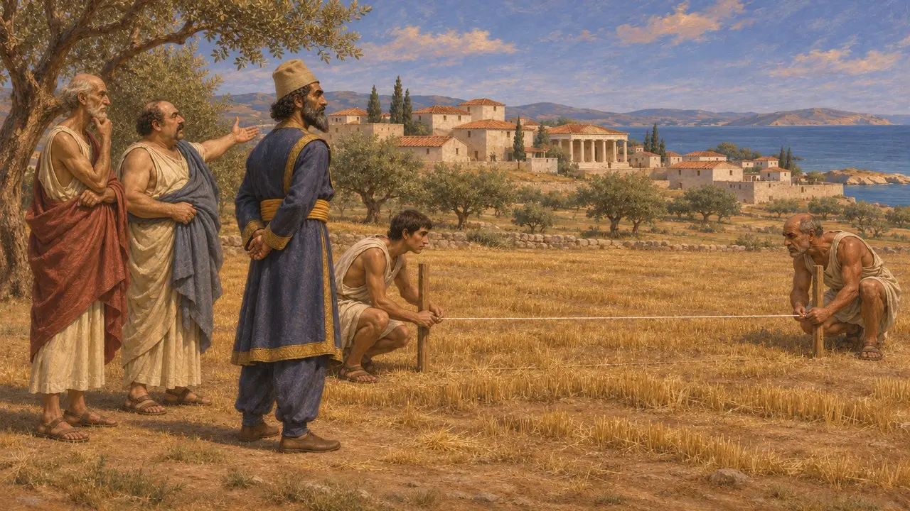
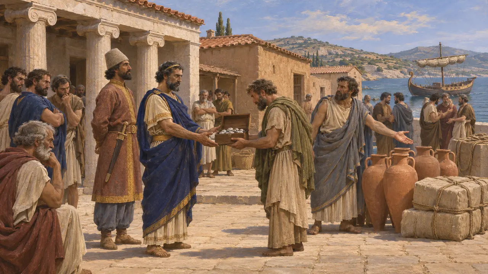
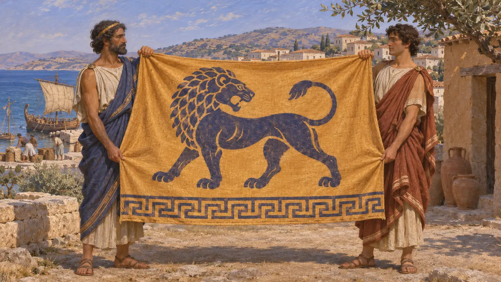

Gli Ioni
Città greche della costa egea dell'Asia Minore sotto il dominio persiano, dagli anni 540 al 479 a.C.
Nel gioco: Livello 6: Il ponte di barche, Livello 7: Sardi brucia, Livello 8: La baia di Maratona
Gli Ioni erano le città di lingua greca della costa occidentale dell'Asia Minore e delle isole vicine, sotto il dominio persiano dagli anni 540 a.C. Pagavano il tributo, tagliavano pietra per Dario e costruivano navi per il Re, fornendone anche gli equipaggi. La loro rivolta, dal 499 a.C. al 494 a.C., trascinò Atene ed Eretria in un conflitto che portò a Maratona e all'invasione di Serse.
Nel gioco: Il gioco mostra gli Ioni come partner commerciali, coscritti e carpentieri navali, come opliti nella rivolta di Sardi e come squadre in mare. Questi ruoli corrispondono alle fonti, sebbene il gioco tratti come un unico popolo una dozzina di città distinte e spesso rivali.

Dodici città sulla costa asiatica
Racconto anticoErodoto nomina dodici città ioniche: Mileto, Miunte, Priene, Efeso, Colofone, Lebedo, Teo, Clazomene, Focea ed Eritre sulla terraferma, e le isole di Samo e Chio. Condividevano un santuario, il Panionio sul Micale. Creso di Lidia le aveva costrette a pagare tributo e, dopo che Ciro ebbe preso Sardi, il suo generale Arpago le sottomise una dopo l'altra, mentre molti Focei e Tei preferirono salpare piuttosto che arrendersi.
Herodotus 1.26-27; Herodotus 1.142-148; Herodotus 1.162-169

Gli Yauna nelle fonti persiane
Nelle fontiNell'iscrizione di Behistun, Dario elenca Yauna tra le terre che vennero a lui. La sua Carta di Susa afferma che Ioni e Sardiani tagliarono la pietra, e che Cari e Ioni portarono il cedro da Babilonia a Susa. Le tavolette delle Fortificazioni di Persepoli registrano razioni per lavoratori chiamati Yauna. Nell'uso persiano e di altri popoli orientali, Yauna divenne un nome generico per indicare i Greci.
DB §6; DSf; Persepolis Fortification tablets

La rivolta, dal 499 a.C. al 494 a.C.
Racconto anticoErodoto narra come Aristagora di Mileto, fallito un attacco contro Nasso, spinse le città a deporre i loro tiranni e a insorgere contro la Persia. Nel 498 a.C. gli Ioni, con l'aiuto di Ateniesi ed Eretriesi, incendiarono la città bassa di Sardi, ma non presero la cittadella. La flotta ribelle fu sbaragliata al largo di Lade nel 494 a.C., dopo la defezione di gran parte delle navi samie, e Mileto cadde. Erodoto conta 353 navi ioniche contro 600 persiane; la seconda cifra è probabilmente gonfiata.
Herodotus 5.30-38; Herodotus 5.99-102; Herodotus 6.6-21

Di nuovo sudditi, dal 493 a.C. al 479 a.C.
Racconto anticoErodoto narra che Artaferne obbligò le città a risolvere le loro contese mediante arbitrato e ne misurò le terre per fissare il tributo. Aggiunge che nel 492 a.C. Mardonio sostituì i tiranni con democrazie. Nel 480 a.C. gli Ioni inviarono cento navi a Serse, e diversi capitani ioni combatterono con valore a Salamina. A Micale, nel 479 a.C., i Sami e i Milesi si rivoltarono contro i Persiani, e in seguito gli stati insulari furono accolti nell'alleanza greca.
Herodotus 6.42-43; Herodotus 7.94; Herodotus 8.85; Herodotus 9.103-106

Perché le città insorsero
ContesoErodoto spiega la rivolta soprattutto con le ambizioni personali di Aristagora e Istieo, e mostra spesso disprezzo per la disciplina degli Ioni. Gli storici moderni danno più peso al risentimento verso i tiranni sostenuti dalla Persia, al peso del tributo e ai mutamenti nei commerci. Discutono anche di quanto fossero uniti i ribelli, dato che lo stesso Erodoto descrive città che agivano da sole e i Sami che disertarono a Lade.
O. Murray, 'The Ionian Revolt', Cambridge Ancient History IV, 1988; P. Briant, From Cyrus to Alexander, 2002

L'emblema accanto al nome
Nelle fontiI Greci della Ionia portano il leone delle monete di Mileto, la città guida della rivolta, con un meandro greco sull'orlo. Le città non avevano una bandiera comune; il leone è il tipo monetale di una sola città che le rappresenta tutte.
Head, Historia Numorum, Ionia
Fonti
- Herodotus, Histories, books 1 and 5 to 9
- Behistun inscription (DB)
- Darius's Susa foundation charter (DSf)
- P. Briant, From Cyrus to Alexander, 2002
- O. Murray, 'The Ionian Revolt', Cambridge Ancient History IV, 1988
- A. Kuhrt, The Persian Empire: A Corpus of Sources, 2007